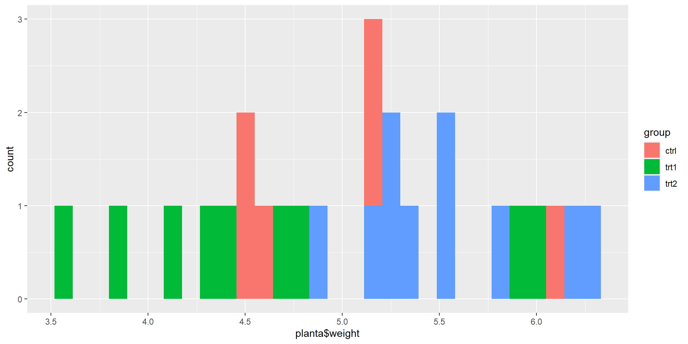

| Estadísticos | Definición |
|---|---|
| Media | Se refiere al promedio de un conjunto de datos |
| Mediana | El valor que se encuentra en la mitad de un conjunto de daots |
Una introducción al lenguaje de programación
Aprender como describir datos, formular hipótesis, validar supuestos y aplicar pruebas estadísticas en R.
Medidas de tendencia central Existen varias pruebas que nos permiten describir la composición y comportamiento de nuestros datos.
Vamos a clasificar medidas de tendencia central y medidas de dispersión
| Estadísticos | Definición |
|---|---|
| Media | Se refiere al promedio de un conjunto de datos |
| Mediana | El valor que se encuentra en la mitad de un conjunto de daots |
Medidas de dispersión
| Estadísticos | Definición |
|---|---|
| Desviación estándar | Qué tan dispersos están los datos en un conjunto |
| Varianza | Dispersión de los datos entorno a la media |
| Rango | Diferencias entre valores máximos y mínimos en una muestra de datos |
Medidas de tendencia central
Medidas de dispersión
[1] 0.7011918[1] 0.49167[1] 3.59 6.31Otra función
Antes de partir en un análisis de normalidad puede ser interesante oberservar como se distribuyen los datos.
Para entender esto, habrá que partir desde un ejemplo básico.
¿Cómo se entienden los datos?
Supongamos que partimos con el siguiente ejemplo.
weight group
1 4.17 ctrl
2 5.58 ctrl
3 5.18 ctrl
4 6.11 ctrl
5 4.50 ctrl
6 4.61 ctrl
7 5.17 ctrl
8 4.53 ctrl
9 5.33 ctrl
10 5.14 ctrl
11 4.81 trt1
12 4.17 trt1
13 4.41 trt1
14 3.59 trt1
15 5.87 trt1
16 3.83 trt1
17 6.03 trt1
18 4.89 trt1
19 4.32 trt1
20 4.69 trt1
21 6.31 trt2
22 5.12 trt2
23 5.54 trt2
24 5.50 trt2
25 5.37 trt2
26 5.29 trt2
27 4.92 trt2
28 6.15 trt2
29 5.80 trt2
30 5.26 trt21. ¿Qué tipos de pruebas podríamos aplicar?
2. ¿Por qué podemos aplicar dichas pruebas?
3. ¿Cuántos grupos tenemos?
4. ¿Qué concluímos en este punto?
Tenemos 30 datos. Se comparan 3 grupos (un control) y dos tratamientos según la variación el peso.
Planteamiento del problema
Variable dependiente: Peso
Variable independiente: Grupo
Formulación de hipótesis
| Hipótesis | Formulación de la hipótesis | Valor P |
|---|---|---|
| Hipótesis nula (HO) | No hay diferencias significativas en el peso de las plantas en los tratamientos | p>0.05 |
| Hipótesis alternativa (H1) | Hay diferencias significativas en el peso de las plantas en al menos uno de los tratamientos | p<0.05 |
Este será nuestro planteamiento. Lo siguiente que podríamos hacer es hacer una evaluación visual sobre qué tenemos y cómo podemos partir para llegar a una respuesta.
Primero hagamos un histograma.
La prueba de Shapiro-Wilk permite que evaluemos si existe o no normalidad en nuestros datos.
| Hipótesis | Formulación de la hipótesis | Valor P |
|---|---|---|
| Hipótesis nula (HO) | Nuestros datos se ajustan a la curva de normalidad | p>0.05 |
| Hipótesis alternativa (H1) | Nuestros datos NO se ajustan a la curva de normalidad | p<0.05 |
Al proceder con la función podemos tener
Shapiro-Wilk normality test
data: planta$weight
W = 0.98268, p-value = 0.8915Qué podemos concluir?
La homocedasticidad en este caso se refiere a a la homogeneidad de varianzas. Existen 2 pruebas principales que pueden usarse para seguir con el análisis paramétrico o no paramétrico.
Debemos considerar Levene o Bartlet.
| Hipótesis | Formulación de la hipótesis | Valor P |
|---|---|---|
| Hipótesis nula (HO) | Nuestros datos se ajustan a la curva de normalidad | p>0.05 |
| Hipótesis alternativa (H1) | Nuestros datos NO se ajustan a la curva de normalidad | p<0.05 |
Posteriormente aplicamos las pruebas teniendo en cuenta ciertos criterios
Levene es más robusta ante diferencias de normalidad, o existan dudas. Se aplica en cualquier caso. Bartlett es más robusta al detectar variaciones en la normalidad, pero es mejor cuando hay normalidad.
Si hemos observado la normalidad, ¿Qué prueba y bajo que criterio debemos hacerlo?
Entendiendo que nuestro valor fue 0.8915 por tanto sugiere p>0.05, entonces, aplicamos Bartlett.
Bartlett test of homogeneity of variances
data: planta$weight by planta$group
Bartlett's K-squared = 2.8786, df = 2, p-value = 0.2371Levene's Test for Homogeneity of Variance (center = median)
Df F value Pr(>F)
group 2 1.1192 0.3412
27 ¿Qué podemos concluir?
Una prueba paramétrica se aplica cuando el criterio de normalidad se cumple tras los supuestos.
| Pruebas Paramétricas | Pruebas NO paramétricas |
|---|---|
| T de Student | Prueba de Wilcoxon - Mann Whitney U test |
| ANOVA de una vía | Prueba de Kruskal-Wallis |
| Correlación de Pearson | Correlación de Spearman |
| Chi cuadrado de independencia | Prueba de Chi-Cuadrado ´Fisher exact test |
Podemos aplicar la prueba así.
[1] "data.frame"grupo_planta.split <- split(PlantGrowth$weight, PlantGrowth$group)
t.test(grupo_planta.split$ctrl, grupo_planta.split$trt1)
Welch Two Sample t-test
data: grupo_planta.split$ctrl and grupo_planta.split$trt1
t = 1.1913, df = 16.524, p-value = 0.2504
alternative hypothesis: true difference in means is not equal to 0
95 percent confidence interval:
-0.2875162 1.0295162
sample estimates:
mean of x mean of y
5.032 4.661 Nuestro valor p es 0.2504 o sea que p>0.05
¿Qué podemos inferir?
La aplicación de ANOVA de una vía implica que tomamos en cuenta una de las colas, o sea hacemos alusión a una de las variables.
Df Sum Sq Mean Sq F value Pr(>F)
PlantGrowth$group 2 3.766 1.8832 4.846 0.0159 *
Residuals 27 10.492 0.3886
---
Signif. codes: 0 '***' 0.001 '**' 0.01 '*' 0.05 '.' 0.1 ' ' 1¿Qué podemos inferir sobre nuestros resultados para la prueba paramétrica?
Una prueba NO paramétrica se aplica cuando el criterio de normalidad no se cumple tras los supuestos.
Para propósitos del ejercicio aplicaremos usaremos el mismo dataset.
Kruskal-Wallis rank sum test
data: PlantGrowth$weight by PlantGrowth$group
Kruskal-Wallis chi-squared = 7.9882, df = 2, p-value = 0.01842¿Qué podemos inferir?
En caso de ser una prueba paramétrica. Tendríamos que:
| Hipótesis | Formulación de la hipótesis | Valor P |
|---|---|---|
| Hipótesis nula (HO) | No hay diferencia significativa entre los grupos | p>0.05 |
| Hipótesis alternativa (H1) | Hay diferencia significativa entre los grupos | p<0.05 |
En caso de tener una prueba no paramétrica:
| Hipótesis | Formulación de la hipótesis | Valor P |
|---|---|---|
| Hipótesis nula (HO) | No hay diferencia significativa entre los grupos | p>0.05 |
| Hipótesis alternativa (H1) | Hay diferencia significativa entre los grupos | p<0.05 |
Entonces, ¿Qué podemos suponer?
Se pueden utilizar cuando se quiere saber la diferencia entre grupos específicos entre sí.
¿Cuándo puede aplicarse?
Pueden aplicarse cuando se cumpla los supuestos paramétricos.
Podemos aplicar la prueba de Tukey que es una prueba paramétrica que combina todas las posibles combinaciones entre grupos para saber cuál es significativamente diferente.
Tukey multiple comparisons of means
95% family-wise confidence level
Fit: aov(formula = PlantGrowth$weight ~ PlantGrowth$group)
$`PlantGrowth$group`
diff lwr upr p adj
trt1-ctrl -0.371 -1.0622161 0.3202161 0.3908711
trt2-ctrl 0.494 -0.1972161 1.1852161 0.1979960
trt2-trt1 0.865 0.1737839 1.5562161 0.0120064Un ejemplo podría ser (Aunque en este caso no es aplicable realmente), sería la prueba de Dunn,que compara pares de grupos con ajustes para múltiples comparaciones. Es la alternativa para Kruskal-Wallis.
Kruskal-Wallis rank sum test
data: x and group
Kruskal-Wallis chi-squared = 7.9882, df = 2, p-value = 0.02
Comparison of x by group
(Bonferroni)
Col Mean-|
Row Mean | ctrl trt1
---------+----------------------
trt1 | 1.117725
| 0.3955
|
trt2 | -1.689289 -2.807015
| 0.1367 0.0075*
alpha = 0.05
Reject Ho if p <= alpha/2En el caso que sí es adecuado:
Tras la solución de t de student no hay diferencias significativas entre ambos grupos
Tras la solución de ANOVA de una vía concluímos que hay mayor variabilidad entre los grupos y que hay diferencias significativas entre ellos